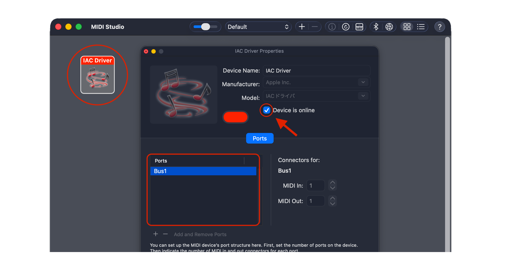
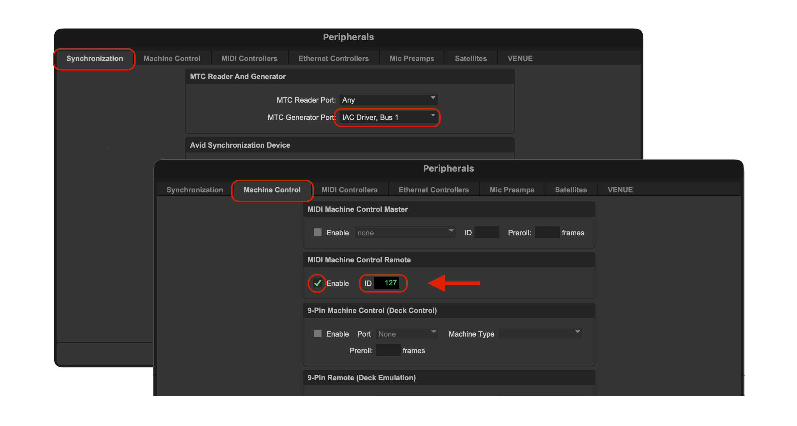
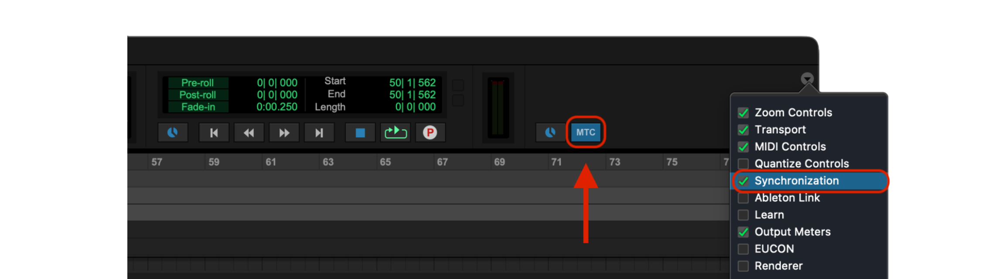
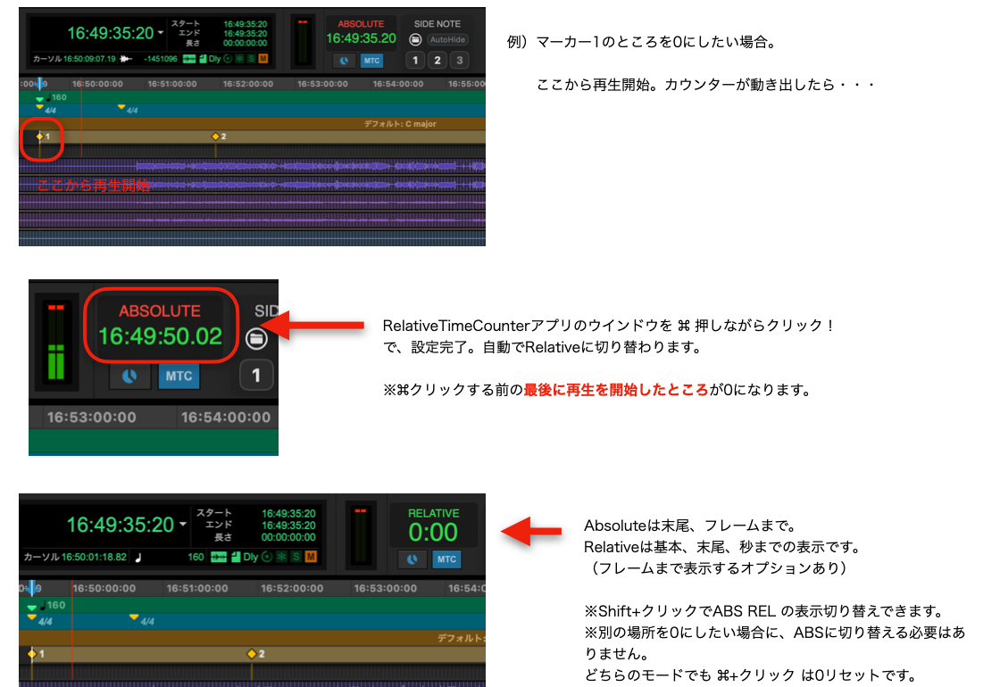
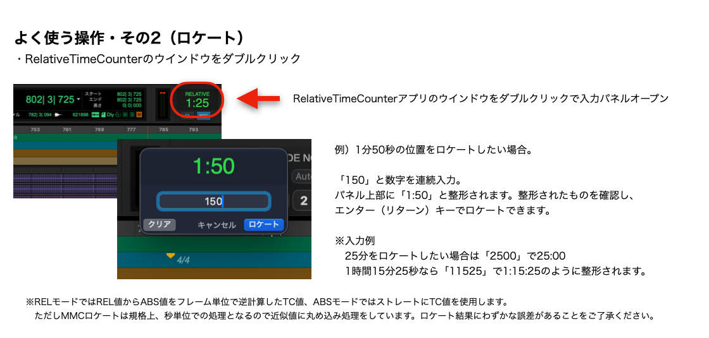
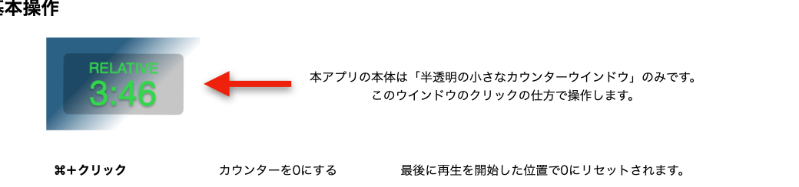
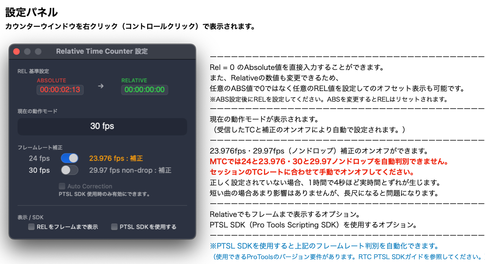
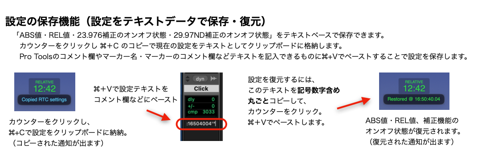
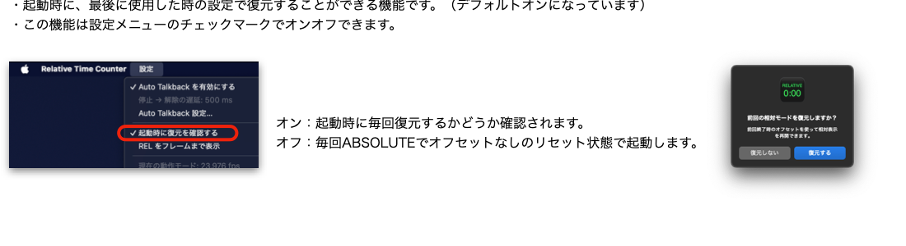
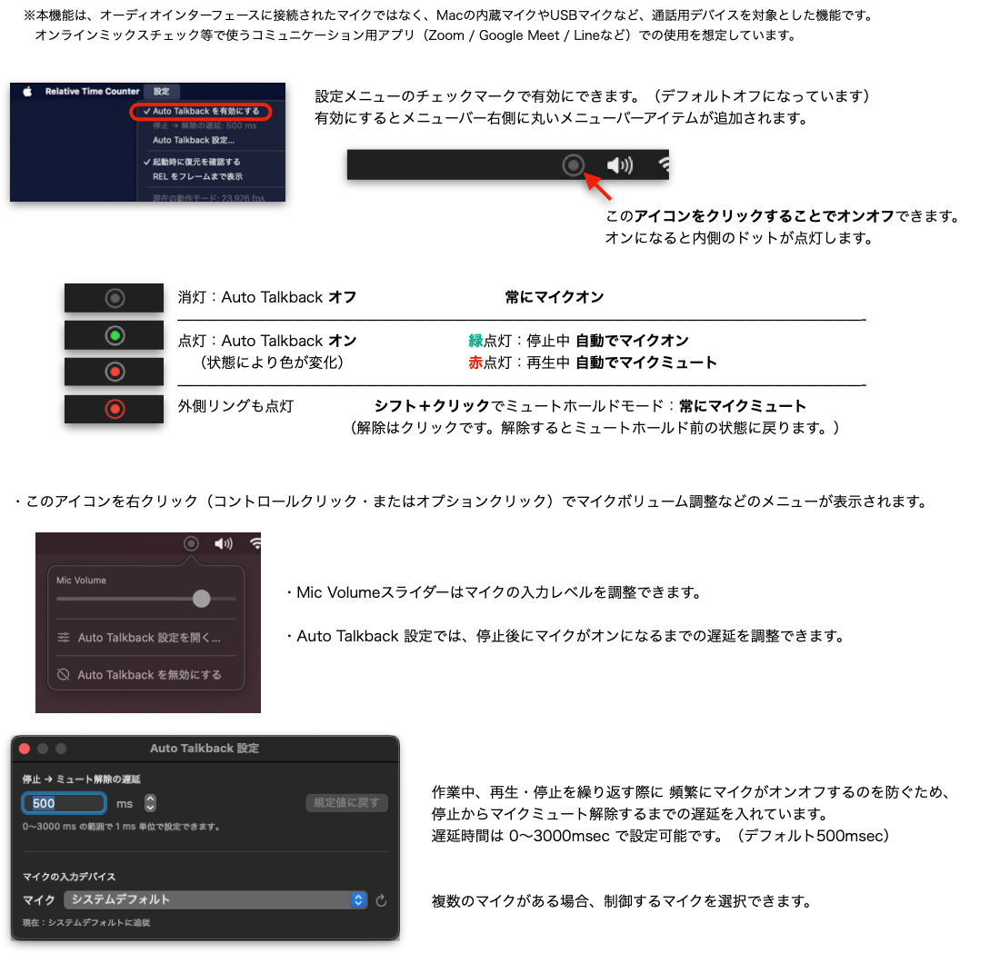

1
IAC Driverを有効にする
「Audio MIDI設定」で「ウインドウ」＞「MIDIスタジオを表示」と選択します。 IAC Driverを開き、「Device is online」をオンにします。 Ports欄に、ポートが1つ以上あることを確認してください。
詳しい設定方法は、Appleの 「MIDI情報をアプリ間で送信する」 を参照してください。

Web Manual
MTC（MIDI Timecode）を受信し、任意の時間を00:00（ゼロスタート）にできる相対カウンターです。 TCフレーム上の実時間を表示できない23.976fps、29.97fps（ノンドロップ）でも、補正を入れることで実時間表示ができます。
Overview
Relative Time Counter（以下、RTC）は、MTCを使ってDAWのタイムコードを受信し、指定した位置からの経過時間を表示します。
おまけ機能として「Auto Talkback機能」があり、MacBookなどの内蔵マイク、USB接続のマイク、Webカメラのマイクなどを、再生時（MTC受信時）に自動でミュートできます。 オンラインミックスチェックなどで、再生時にマイクをミュートする手間が省けます。
Setup
Relative Time Counterは、MTCおよびMMCに対応するDAWで使用できます。
「Audio MIDI設定」でIAC Driverを有効にし、DAWのMTC送信先をIAC Driverに設定してください。
RTCからロケートする場合は、DAW側でMMCロケートの受信を有効にし、デバイスIDを127に設定します。
以下では、Pro Toolsを使用する場合の設定方法を説明します。
| Audio MIDI設定 | MIDIスタジオでIACドライバーを有効にする（「装置はオンライン」のチェックマークをオン）。 |
|---|---|
| Pro Tools：同期 |
「MTC Generator Port」に、IAC Driverを選択します。 ※RTCはIAC DriverのどのポートからもMTCを受信します。 |
| Pro Tools：マシンコントロール | ペリフェラル／マシンコントロールのMIDIマシンコントロールリモートを有効化（IDは127）。 |
| Pro Toolsツールバー | 同期を表示し、MTCボタンをオン。 |
「Audio MIDI設定」で「ウインドウ」＞「MIDIスタジオを表示」と選択します。 IAC Driverを開き、「Device is online」をオンにします。 Ports欄に、ポートが1つ以上あることを確認してください。
詳しい設定方法は、Appleの 「MIDI情報をアプリ間で送信する」 を参照してください。

「設定」＞「ペリフェラル」を開きます。
「MTC Generator Port」に、IAC Driverを選択します。
※RTCはIAC DriverのどのポートからもMTCを受信します。
続いてMachine Controlを開き、「MIDI Machine Control Remote」のEnableをオンにして、IDを127にします。

Pro ToolsツールバーでSynchronizationを表示し、MTCボタンをオンにします。

Audio MIDI設定は一度設定すれば、毎回の設定は不要です。
Pro Toolsの設定はセッション設定になるため、セッション切り替えでMTC送信ポートなどが変更される場合があります。動作しない場合は設定を確認してください。
Quick Manual 01
カウンターを0にしたいところから再生を開始し、MTCを読み込ませます。
Relative Time Counterのウインドウを⌘（Command）キーを押しながらクリックします。
これで設定は完了し、自動でRELATIVE表示に切り替わります。

⌘クリックする前に、最後に再生を開始したところが0になります。
Shift + クリックでABS / RELの表示を切り替えられます。どちらのモードでも⌘ + クリックは0リセットです。
Quick Manual 02
Relative Time Counterのウインドウをダブルクリックすると入力パネルが開きます。 数字を連続入力し、パネル上部に整形された値を確認して、Enter（Return）キーでロケートします。

| 2500 | 25:00に整形し、25分へロケート。 |
|---|---|
| 11525 | 1:15:25に整形し、1時間15分25秒へロケート。 |
RELモードではREL値からABS値をフレーム単位で逆計算したTC値、ABSモードではストレートにTC値を使用します。
MMCロケートは規格上、秒単位の処理となるため近似値に丸め込み処理をしています。ロケート結果にわずかな誤差があることをご了承ください。
Detailed Manual
本アプリの本体は「半透明の小さなカウンターウインドウ」のみです。このウインドウのクリックの仕方で操作します。

| ⌘ + クリック | カウンターを0にする。最後に再生を開始した位置で0にリセットされます。 |
|---|---|
| ダブルクリック | ロケート機能。数値入力後、Enterキーでロケート情報を送出します。 |
| Shift + クリック | ABS / RELの表示切り替え。 |
| 右クリック Control + クリック |
設定パネルを表示し、補正機能のオン・オフなどを設定します。 |
| Option + クリック | macOS標準の「クリックしたアプリケーションに切り替え、現在のアプリケーションを隠す」が機能します。 |
Settings
カウンターウインドウを右クリック（Controlクリック）すると表示されます。

MTCでは24と23.976、30と29.97ノンドロップを自動判別できません。セッションのTCレートに合わせて手動でオン・オフしてください。
PTSL SDKを使用すると、上記のフレームレート判別を自動化できます（使用できるPro Toolsのバージョン要件があります）。
Save / Restore
ABS値、REL値、23.976補正のオン・オフ状態、29.97ND補正のオン・オフ状態をテキストベースで保存できます。 カウンターをクリックし、⌘ + Cで現在の設定をテキストとしてクリップボードに格納します。

| 設定を保存 | カウンターをクリックして⌘ + C。Pro Toolsのコメント欄やマーカー名などへ⌘ + Vでペーストします。 |
|---|---|
| 設定を復元 | 設定テキストを記号・数字を含めて丸ごとコピーし、カウンターをクリックして⌘ + Vでペーストします。 |
Startup
起動時に、最後に使用した時の設定で復元できる機能です（デフォルトオン）。設定メニューのチェックマークでオン・オフできます。

| オン | 起動時に毎回、復元するかどうか確認されます。 |
|---|---|
| オフ | 毎回ABSOLUTEで、オフセットなしのリセット状態で起動します。 |
Auto Talkback
Pro Tools再生中（MTC受信中）に、内蔵マイク、USBマイク、Webカメラのマイクなどを自動でミュートできます。 オーディオインターフェースに接続されたマイクではなく、Macの内蔵マイクやUSBマイクなど、通話用デバイスを対象とした機能です。 オンラインミックスチェックなどで使うコミュニケーション用アプリ（Zoom / Google Meet / Lineなど）での使用を想定しています。

| 消灯 | Auto Talkbackオフ。常にマイクオン。 |
|---|---|
| 緑点灯 | 停止中。自動でマイクオン。 |
| 赤点灯 | 再生中。自動でマイクミュート。 |
| Shift + クリック | ミュートホールドモード。常にマイクミュート。解除はクリックで、解除前の状態に戻ります。 |
| 右クリック Control / Option + クリック |
Mic Volume、Auto Talkback設定、無効化などのメニューを表示。 |
停止からマイクミュートを解除するまでの遅延は、0〜3000msecの範囲で1ms単位に設定できます（デフォルト500msec）。
複数のマイクがある場合は、制御するマイクを選択できます。